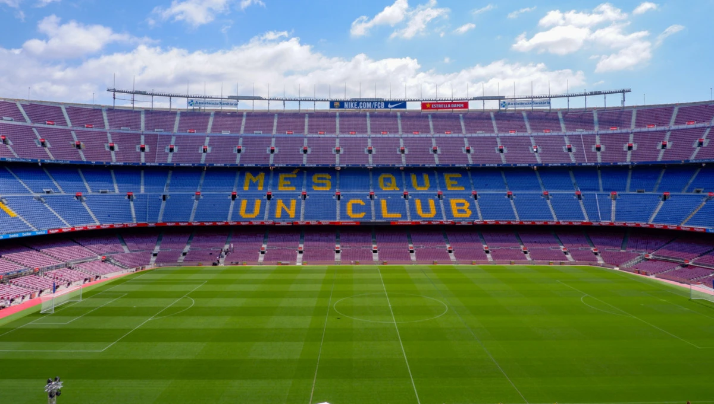

Por que o futebol é tão popular?
Simplicidade nas regras, baixo custo para praticar (basta uma bola) e a emoção de torcer por um time fazem do futebol o esporte mais assistido do planeta. Milhões de pessoas acompanham campeonatos nacionais e torneios internacionais como a Copa do Mundo.
